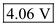
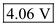

Step 1:
Refer to Figure 6.5 (b) in the textbook for a large-signal equivalent circuit model of an  transistor operating in forward active mode.
transistor operating in forward active mode.
Consider that the base voltage,  , collector voltage, , collector resistance, , emitter current, , common-emitter current gain,
, collector voltage, , collector resistance, , emitter current, , common-emitter current gain,  , and the reverse saturation current,
, and the reverse saturation current,  .
.
Draw the circuit with the known specifications.
Step 2:
Calculate the value of common-base current gain,  .
.
Calculate the saturation current.
Consider the following expression for the emitter current:

Substitute 3 mA for  , 1.01 fA for
, 1.01 fA for  , 25 mV for thermal equivalent voltage,
, 25 mV for thermal equivalent voltage,  to find the value of base-emitter voltage,
to find the value of base-emitter voltage,  .
.
The emitter voltage is,
Hence, the emitter voltage,  is, .
is, .
Step 3:
Calculate the collector voltage,  .
.
Hence, the collector voltage,  is, .
is, .
Calculate the base current,  .
.
Hence, the base current,  is, .
is, .